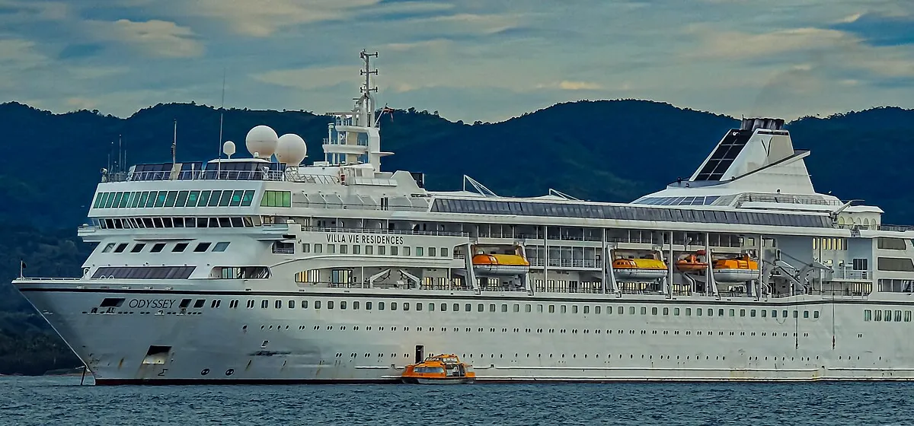
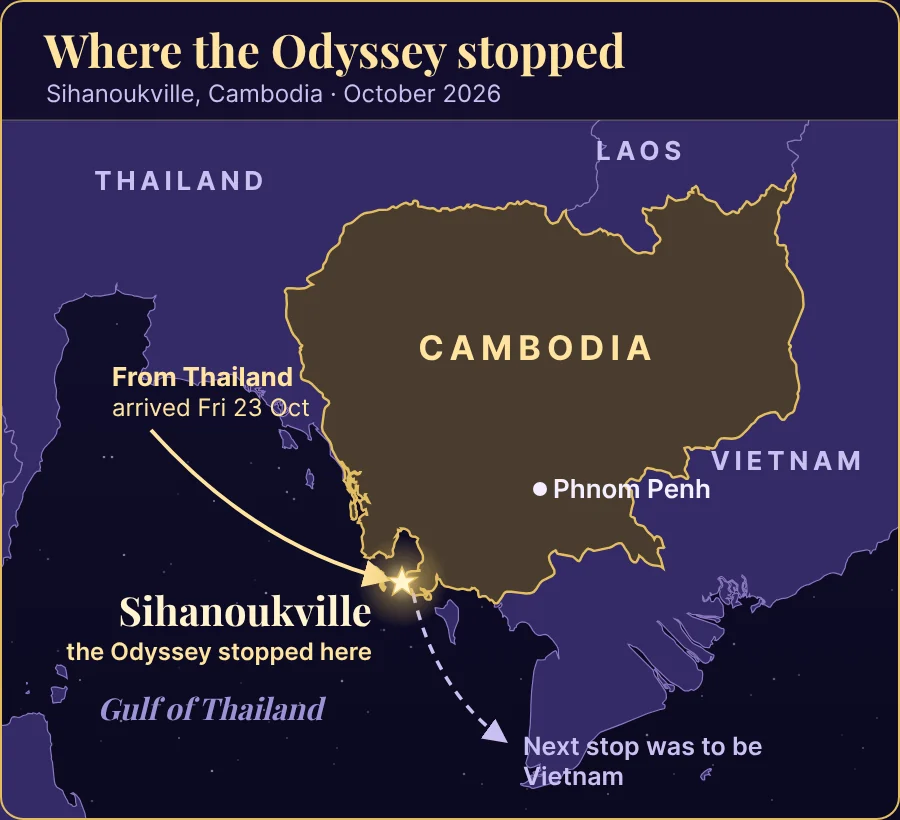
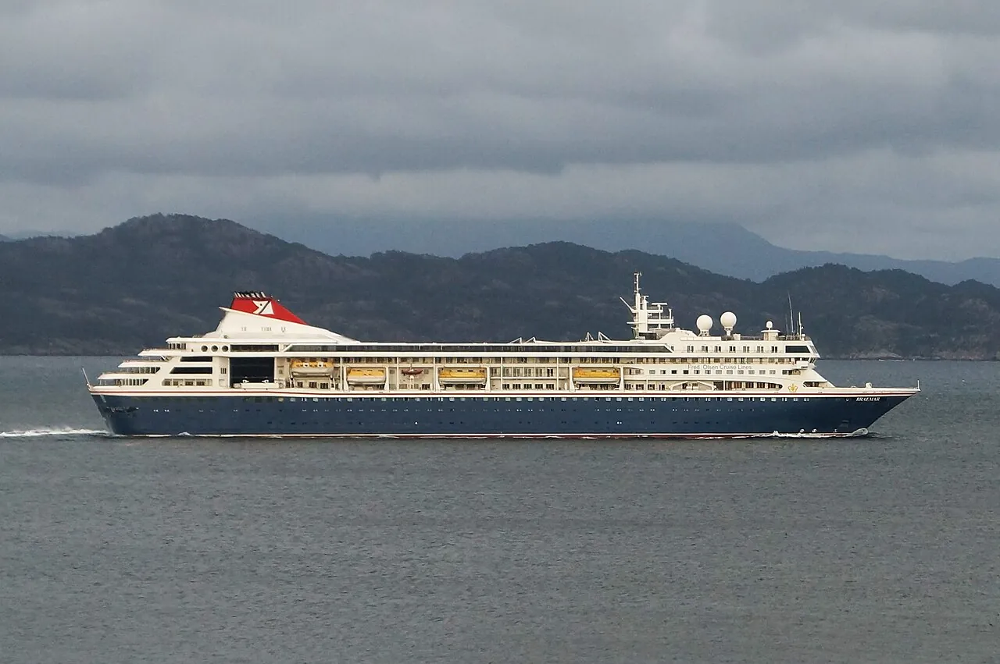
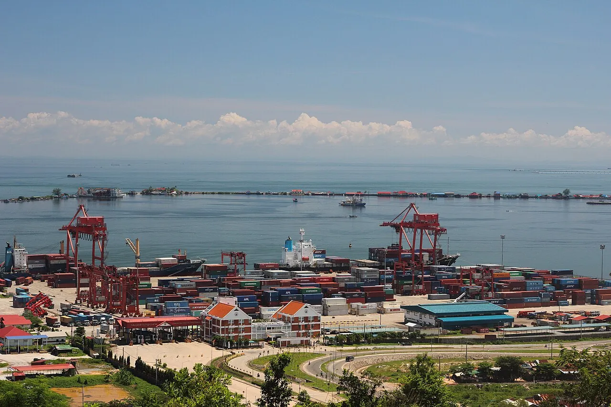
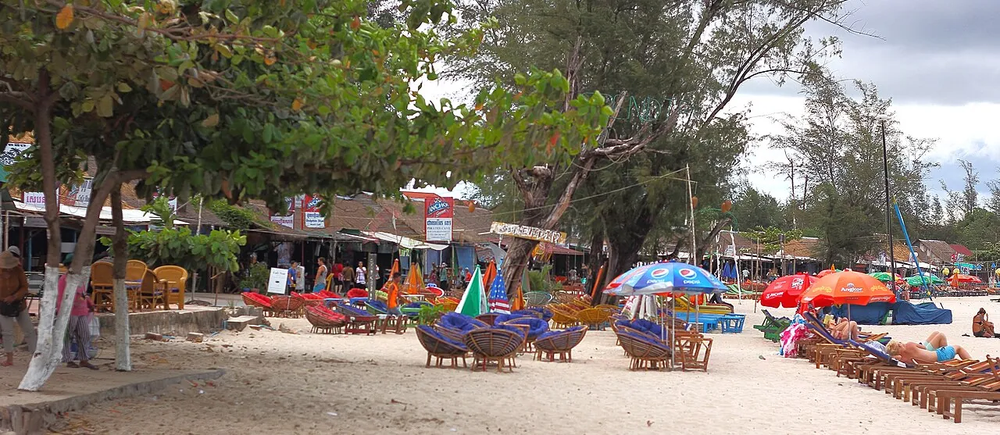

Cambodia News
Villa Vie Odyssey Stuck in Cambodia: What Happened to the “Endless Cruise” in Sihanoukville
On Monday 26 October 2026, the people who live on the Villa Vie Odyssey, a cruise ship where residents buy cabins as long-term homes, were told to leave the ship in Sihanoukville, Cambodia, by 2 p.m. that day. The company says it could not get the fuel it needed to keep sailing. This is what has been reported so far.

What happened in Sihanoukville
The Odyssey reached Sihanoukville from Thailand on Friday 23 October 2026. Cambodian provincial officials told reporters it arrived with 203 passengers and 156 crew, and that it was due to continue to Vietnam, according to RTÉ and the Associated Press.
On Monday 26 October, Villa Vie Residences chief executive Kathy Villalba posted a notice to residents on the ship's internal message board, Cruise Hive reported. It said the ship would go into a layup that afternoon, with the crew staying on board to look after the vessel, and that all residents had to be off the ship by 2 p.m. “Unfortunately, we were unable to secure the fuel necessary to continue operations,” the notice said.
Residents who could not take everything with them at once could arrange to come back for their belongings through Guest Services, and a shuttle for moving belongings ran only until Tuesday evening, according to Cruise Hive. On Tuesday 27 October the company announced that it had suspended operations in Cambodia.

Why the ship stopped: fuel costs
In its statement, Villa Vie said its fuel costs had risen from a historical average of about $1,800 per cabin per month to an estimated $6,000 to $8,000 per cabin in parts of Asia. AP and RTÉ linked the rise to the war involving Iran that began in late February 2026.
The company said it had slowed the itinerary and spent more time in port to burn less fuel, but that this was not enough. “Passing the full increase on to residents is not a realistic solution,” it said.
Founder Mikael Petterson gave more detail in an interview with CBS News, as reported by the cruise news site Pirates & Princesses: fuel that cost about $700 a ton before late February had risen to $2,000 to $3,000 a ton, and monthly expenses had grown from about $400,000 to $2 million. “We've borrowed money, we've stretched our payrolls as far as we can,” he said.
Residents describe months of strain before the stop. One resident, Holly Hennessey, told RTÉ that a fuel loan programme was offered in April and a fuel surcharge was charged in May, which she said only 37% of passengers paid. Cruise Industry News, citing people on board, reported, according to Newsweek, that residents had been asked several times for more money, including about $360,000 for fuel.
What happens to the residents
Many of the residents are retirees and remote workers, RTÉ reported, and AP said most are American. Some flew out of Cambodia; others stayed on in Sihanoukville, some of them in hotels.
Villa Vie said it was “working with residents to coordinate disembarkation and identify temporary living arrangements.” Reports differ on who is paying for that. Petterson was reported as saying the company is covering local hotels and transport but not flights out of Cambodia, while resident Randy Cassingham, who writes a blog about the voyage, told Cruise Industry News: “They have absolutely not offered to pay for that lodging, full stop.” Cassingham also said residents pooled cash so that junior crew members each received $100.
Villa Vie has not said publicly whether residents will get any money back. Residents paid large sums to live on board: cabins were advertised from about $120,000, and AP reported that a suite for the life of the ship started at around $230,000. Hennessey told RTÉ she has spent just under $500,000 since boarding in 2024, and that the money could be lost unless an investor saves the ship. She still called her two years at sea “magical.”
Looking back, Cassingham told Cruise Hive the end came from a combination of the business model, management mistakes and the fuel crisis: “it was a cascade of problems piling up on one another.”
What comes next
The company says it will work toward restructuring and new financing over the next 60 days, and warned that “no outcome is assured.” On 28 October, Petterson told CBS News that the company plans to file for Chapter 11 bankruptcy protection, Pirates & Princesses reported; no court filing had been reported at the time of writing.
Long Dimanche, deputy governor of Preah Sihanouk province, told AP the ship was expected to refuel and leave Cambodia on Saturday 31 October. Villa Vie has not confirmed a departure date or where the ship would go, and the crew remain on board in the meantime.
Residents are waiting to see whether an investor steps in or whether owners form a group to keep the ship going, Hennessey told RTÉ; she described both as possibilities, not plans. Earlier, in July 2026, the company had announced a second ship, the Legacy, for 2029, Cruise Hive reported.
The Odyssey’s week in Sihanoukville
October 2026, as reported
- Arrives in SihanoukvilleFrom Thailand, with 203 passengers and 156 crew, Cambodian officials said.
- Residents told to leaveOff the ship by 2 p.m. that day. The crew stay on board to look after it.
- Operations suspendedVilla Vie blames fuel costs and starts a 60-day restructuring.
- Chapter 11 plannedFounder Mikael Petterson tells CBS News the company plans to file.
- Expected to refuel and leaveSaid by a provincial official. Villa Vie has not confirmed it.
About the Villa Vie Odyssey
The Odyssey was built in Spain in 1993. From 2001 until the COVID-19 pandemic it sailed as the Braemar for the British line Fred. Olsen Cruise Lines, and it was then laid up for about four years before Villa Vie took it over, The Maritime Executive reported. The ship measures 24,344 gross tons.
Villa Vie's idea was a “residential” cruise: people buy a cabin and live on board while the ship sails around the world without end. Its first voyage was planned to last about three and a half years and visit more than 425 destinations. The ship made headlines in 2024 when months of delays during its refit kept it in Belfast, Northern Ireland, before it finally set off in the autumn of that year.
By the time it stopped in Cambodia, the ship had been at sea for about two years. It can hold about 650 residents, but Cassingham told RTÉ it never filled up and peaked at about 350.

Sihanoukville and stranded ships
Sihanoukville, in Preah Sihanouk province on the Gulf of Thailand, is Cambodia's main seaport. It has helped a stranded cruise ship before: in early 2020, AP recalled, Cambodia let the MS Westerdam dock there after several other ports had turned it away at the start of the COVID-19 pandemic.
This story is still developing. The facts above are as reported up to 29 October 2026; check the sources below for the latest news.


Frequently asked questions
Why is the Villa Vie Odyssey stuck in Cambodia?
Villa Vie Residences says it could not secure the fuel it needed to keep sailing. It says fuel costs in parts of Asia rose from about $1,800 to an estimated $6,000 to $8,000 per cabin per month, so it put the ship into a layup in Sihanoukville and suspended operations on 27 October 2026.
Where in Cambodia is the ship?
In Sihanoukville, Cambodia's main seaport, in Preah Sihanouk province on the Gulf of Thailand. It arrived there from Thailand on 23 October 2026.
How many people were on board?
Cambodian officials said the ship arrived with 203 passengers and 156 crew. The residents were told to leave on 26 October; the crew stayed on board to look after the ship.
Will the residents get their money back?
Villa Vie has not said so publicly. The company says it is working on restructuring and new financing over 60 days, warns that no outcome is assured, and its founder told CBS News it plans to file for Chapter 11.
Will the Villa Vie Odyssey sail again?
It is not known yet. A Cambodian provincial official said the ship was expected to refuel and leave on 31 October 2026, but Villa Vie has not confirmed this, and the company says no outcome is assured.
Sources and further reading
- Cruise Hive: “Villa Vie Odyssey Residents Ordered Off Ship as Fuel Crisis Forces Layup” (27 October 2026) — the layup in Sihanoukville, Kathy Villalba's notice and the 2 p.m. deadline, the belongings shuttle, Randy Cassingham's comments and the Legacy announcement.
- The Maritime Executive: report on Villa Vie suspending operations (27 October 2026) — the company's statement on fuel costs, the 60-day restructuring and the ship's history as the Braemar.
- Newsweek: report on the end of the Odyssey's world cruise (27 October 2026) — the company's statement and the funding requests reported by Cruise Industry News.
- RTÉ: “Stranded cruise passengers seek investor to continue trip” (28 October 2026) — the officials' passenger and crew numbers, the arrival from Thailand, and the accounts of Holly Hennessey and Randy Cassingham.
- Pirates & Princesses: “Villa Vie plans Chapter 11 after Odyssey residents left in Cambodia” — Mikael Petterson's CBS News interview, the hotel dispute and the crew collection.
- Pirates & Princesses: “Villa Vie Odyssey could leave Cambodia Saturday, officials say” — the deputy governor's comments to AP, cabin prices and the MS Westerdam in 2020.
This is a news summary of what other outlets have reported; MyBirthSign has no connection to Villa Vie Residences. Every figure and quote above comes from the sources listed, and some reports disagree, as noted in the text. Photos are from Wikimedia Commons under the free licences named under each picture.
Explore more: Cambodian public holidays · Cambodia Water Festival · Cambodia Independence Day · Khmer Calendar
← Back to the MyBirthSign Blogព័ត៌មានកម្ពុជា
កប៉ាល់ Villa Vie Odyssey ជាប់គាំងនៅកម្ពុជា៖ អ្វីដែលបានកើតឡើងចំពោះ «ដំណើរទេសចរណ៍គ្មានទីបញ្ចប់» នៅក្រុងព្រះសីហនុ
នៅថ្ងៃច័ន្ទ ទី 26/10/2026 អ្នករស់នៅលើកប៉ាល់ Villa Vie Odyssey ដែលជាកប៉ាល់ទេសចរណ៍ ដែលអ្នករស់នៅទិញបន្ទប់ធ្វើជាផ្ទះសម្បែងរយៈពេលវែង ត្រូវបានប្រាប់ឲ្យចាកចេញពីកប៉ាល់ នៅក្រុងព្រះសីហនុ ប្រទេសកម្ពុជា ត្រឹមម៉ោង 14:00 ថ្ងៃដដែល។ ក្រុមហ៊ុនថា ខ្លួនមិនអាចរកប្រេងឥន្ធនៈដែលត្រូវការ ដើម្បីបន្តធ្វើដំណើរបានទេ។ ខាងក្រោមនេះ ជាអ្វីដែលត្រូវបានរាយការណ៍មកទល់ពេលនេះ។
អ្វីដែលបានកើតឡើងនៅក្រុងព្រះសីហនុ
កប៉ាល់ Odyssey បានមកដល់ក្រុងព្រះសីហនុ ពីប្រទេសថៃ នៅថ្ងៃសុក្រ ទី 23/10/2026។ យោងតាម RTÉ និង Associated Press (AP) មន្ត្រីខេត្តរបស់កម្ពុជា បានប្រាប់អ្នកសារព័ត៌មានថា កប៉ាល់នេះមកដល់ ដោយមានអ្នកដំណើរ 203 នាក់ និងនាវិក 156 នាក់ ហើយថា កប៉ាល់គ្រោងនឹងបន្តដំណើរទៅប្រទេសវៀតណាម។
Cruise Hive រាយការណ៍ថា នៅថ្ងៃច័ន្ទ ទី 26/10/2026 លោកស្រី Kathy Villalba នាយិកាប្រតិបត្តិក្រុមហ៊ុន Villa Vie Residences បានបិទផ្សាយសេចក្ដីជូនដំណឹងមួយ ជូនអ្នករស់នៅ លើក្ដារព័ត៌មានផ្ទៃក្នុងរបស់កប៉ាល់។ សេចក្ដីជូនដំណឹងនោះថា កប៉ាល់នឹងចូលចតផ្អាកដំណើរការ (layup) នៅរសៀលថ្ងៃនោះ ដោយនាវិកនៅលើកប៉ាល់ ដើម្បីថែរក្សាកប៉ាល់ ហើយអ្នករស់នៅទាំងអស់ ត្រូវចុះពីកប៉ាល់ត្រឹមម៉ោង 14:00។ សេចក្ដីជូនដំណឹងសរសេរថា «ជាអកុសល យើងមិនអាចរកប្រេងឥន្ធនៈចាំបាច់ ដើម្បីបន្តប្រតិបត្តិការបានទេ»។
យោងតាម Cruise Hive អ្នករស់នៅដែលមិនអាចយករបស់របរទាំងអស់ទៅជាមួយក្នុងពេលតែមួយ អាចរៀបចំត្រឡប់មកយកអីវ៉ាន់របស់ខ្លួនវិញ តាមរយៈផ្នែកសេវាភ្ញៀវ (Guest Services) ហើយសេវាដឹកជញ្ជូនអីវ៉ាន់ ដំណើរការត្រឹមល្ងាចថ្ងៃអង្គារប៉ុណ្ណោះ។ នៅថ្ងៃអង្គារ ទី 27/10/2026 ក្រុមហ៊ុនបានប្រកាសថា ខ្លួនបានផ្អាកប្រតិបត្តិការនៅកម្ពុជា។
ហេតុអ្វីកប៉ាល់ឈប់៖ ថ្លៃប្រេងឥន្ធនៈ
ក្នុងសេចក្ដីថ្លែងការណ៍របស់ខ្លួន Villa Vie បាននិយាយថា ថ្លៃប្រេងឥន្ធនៈរបស់ខ្លួន បានកើនឡើងពីមធ្យមភាគកន្លងមក ប្រហែល 1,800 ដុល្លារ ក្នុងមួយបន្ទប់ ក្នុងមួយខែ ដល់កម្រិតប៉ាន់ស្មាន 6,000 ទៅ 8,000 ដុល្លារ ក្នុងមួយបន្ទប់ នៅតំបន់ខ្លះនៃទ្វីបអាស៊ី។ AP និង RTÉ បានភ្ជាប់ការកើនឡើងនេះ ទៅនឹងសង្គ្រាមដែលពាក់ព័ន្ធនឹងប្រទេសអ៊ីរ៉ង់ ដែលបានផ្ទុះឡើងនៅចុងខែកុម្ភៈ 2026។
ក្រុមហ៊ុនបាននិយាយថា ខ្លួនបានបន្ថយល្បឿននៃកាលវិភាគធ្វើដំណើរ និងចំណាយពេលនៅកំពង់ផែយូរជាងមុន ដើម្បីប្រើប្រេងឥន្ធនៈតិចជាងមុន ប៉ុន្តែការធ្វើដូច្នេះ មិនគ្រប់គ្រាន់ទេ។ ក្រុមហ៊ុនបាននិយាយថា «ការផ្ទេរការកើនឡើងទាំងស្រុង ទៅឲ្យអ្នករស់នៅជាអ្នករ៉ាប់រង មិនមែនជាដំណោះស្រាយជាក់ស្ដែងទេ»។
ស្ថាបនិកក្រុមហ៊ុន លោក Mikael Petterson បានផ្ដល់ព័ត៌មានលម្អិតបន្ថែម ក្នុងបទសម្ភាសមួយជាមួយ CBS News នេះបើតាមការរាយការណ៍របស់គេហទំព័រព័ត៌មានទេសចរណ៍តាមកប៉ាល់ Pirates & Princesses៖ ប្រេងឥន្ធនៈដែលមានតម្លៃប្រហែល 700 ដុល្លារក្នុងមួយតោន មុនចុងខែកុម្ភៈ បានឡើងដល់ 2,000 ទៅ 3,000 ដុល្លារក្នុងមួយតោន ហើយចំណាយប្រចាំខែ បានកើនពីប្រហែល 400,000 ដុល្លារ ដល់ 2 លានដុល្លារ។ លោកបាននិយាយថា «យើងបានខ្ចីលុយ យើងបានទ្រាំទ្របើកប្រាក់បៀវត្សរ៍ ឲ្យបានយូរបំផុតតាមលទ្ធភាព»។
អ្នករស់នៅរៀបរាប់ពីភាពតានតឹងរាប់ខែ មុនពេលកប៉ាល់ឈប់។ អ្នករស់នៅម្នាក់ គឺលោកស្រី Holly Hennessey បានប្រាប់ RTÉ ថា កម្មវិធីប្រាក់កម្ចីសម្រាប់ប្រេងឥន្ធនៈ ត្រូវបានស្នើឡើងក្នុងខែមេសា ហើយថ្លៃបន្ថែមលើប្រេងឥន្ធនៈ ត្រូវបានគិតក្នុងខែឧសភា ដែលលោកស្រីថា មានអ្នកដំណើរតែ 37 ភាគរយប៉ុណ្ណោះបានបង់។ យោងតាម Newsweek, Cruise Industry News ដោយដកស្រង់សម្ដីអ្នកនៅលើកប៉ាល់ បានរាយការណ៍ថា អ្នករស់នៅត្រូវបានស្នើសុំប្រាក់បន្ថែមច្រើនដង រួមទាំងប្រហែល 360,000 ដុល្លារ សម្រាប់ប្រេងឥន្ធនៈ។
អ្វីដែលកើតឡើងចំពោះអ្នករស់នៅលើកប៉ាល់
RTÉ រាយការណ៍ថា អ្នករស់នៅជាច្រើន ជាអ្នកចូលនិវត្តន៍ និងអ្នកធ្វើការពីចម្ងាយ ហើយ AP ថា ភាគច្រើនជាជនជាតិអាមេរិក។ អ្នកខ្លះបានជិះយន្តហោះចេញពីកម្ពុជា ចំណែកអ្នកខ្លះទៀត នៅបន្តនៅក្រុងព្រះសីហនុ ដោយខ្លះស្នាក់នៅតាមសណ្ឋាគារ។
Villa Vie បាននិយាយថា ខ្លួនកំពុង «ធ្វើការជាមួយអ្នករស់នៅ ដើម្បីសម្របសម្រួលការចុះពីកប៉ាល់ និងរកកន្លែងស្នាក់នៅបណ្ដោះអាសន្ន»។ របាយការណ៍នានាមិនស៊ីគ្នា អំពីថាតើនរណាជាអ្នកចេញថ្លៃនោះ។ មានការរាយការណ៍ថា លោក Petterson បាននិយាយថា ក្រុមហ៊ុនកំពុងចេញថ្លៃសណ្ឋាគារ និងការធ្វើដំណើរក្នុងស្រុក ប៉ុន្តែមិនចេញថ្លៃជើងហោះហើរចេញពីកម្ពុជាទេ ខណៈដែលអ្នករស់នៅម្នាក់ គឺលោក Randy Cassingham ដែលសរសេរប្លុកអំពីដំណើរនេះ បានប្រាប់ Cruise Industry News ថា៖ «ពួកគេពិតជាមិនបានស្នើចេញថ្លៃកន្លែងស្នាក់នៅនោះទាល់តែសោះ គ្មានអ្វីត្រូវនិយាយទៀតទេ»។ លោក Cassingham ក៏បាននិយាយដែរថា អ្នករស់នៅបានរួមគ្នាប្រមូលលុយ ដើម្បីឲ្យនាវិកថ្នាក់ក្រោមម្នាក់ៗ ទទួលបាន 100 ដុល្លារ។
Villa Vie មិនទាន់បាននិយាយជាសាធារណៈទេ ថាតើអ្នករស់នៅនឹងបានប្រាក់ត្រឡប់មកវិញខ្លះឬអត់។ អ្នករស់នៅបានបង់ប្រាក់យ៉ាងច្រើន ដើម្បីរស់នៅលើកប៉ាល់៖ បន្ទប់ត្រូវបានផ្សព្វផ្សាយលក់ ចាប់ពីប្រហែល 120,000 ដុល្លារ ហើយ AP រាយការណ៍ថា បន្ទប់ធំ (suite) សម្រាប់រស់នៅពេញមួយអាយុកាលកប៉ាល់ មានតម្លៃចាប់ពីប្រមាណ 230,000 ដុល្លារ។ លោកស្រី Hennessey បានប្រាប់ RTÉ ថា លោកស្រីបានចំណាយជិត 500,000 ដុល្លារ ចាប់តាំងពីឡើងកប៉ាល់នៅឆ្នាំ 2024 ហើយថា ប្រាក់នោះអាចនឹងបាត់បង់ បើគ្មានវិនិយោគិនណាមកសង្គ្រោះកប៉ាល់ទេ។ ទោះយ៉ាងណា លោកស្រីនៅតែហៅរយៈពេលពីរឆ្នាំរបស់លោកស្រីនៅលើសមុទ្រថា «អស្ចារ្យណាស់»។
ពេលក្រឡេកមើលទៅក្រោយ លោក Cassingham បានប្រាប់ Cruise Hive ថា ទីបញ្ចប់នេះ កើតចេញពីកត្តារួមគ្នា រវាងគំរូអាជីវកម្ម កំហុសក្នុងការគ្រប់គ្រង និងវិបត្តិប្រេងឥន្ធនៈ៖ «វាជាបញ្ហាជាច្រើន ដែលហូរចូលមកជាប់ៗគ្នា ហើយគរលើគ្នា»។
អ្វីដែលនឹងកើតឡើងបន្ទាប់
ក្រុមហ៊ុនថា ខ្លួននឹងខិតខំរៀបចំរចនាសម្ព័ន្ធឡើងវិញ និងរកហិរញ្ញប្បទានថ្មី ក្នុងរយៈពេល 60 ថ្ងៃខាងមុខ ហើយបានព្រមានថា «គ្មានលទ្ធផលណាមួយត្រូវបានធានាឡើយ»។ Pirates & Princesses រាយការណ៍ថា នៅថ្ងៃទី 28/10/2026 លោក Petterson បានប្រាប់ CBS News ថា ក្រុមហ៊ុនគ្រោងនឹងដាក់ពាក្យសុំកិច្ចការពារក្ស័យធន តាម Chapter 11។ គិតត្រឹមពេលសរសេរអត្ថបទនេះ មិនទាន់មានការរាយការណ៍ពីការដាក់ពាក្យនៅតុលាការណាមួយនៅឡើយទេ។
លោក ឡុង ឌីម៉ង់ អភិបាលរងខេត្តព្រះសីហនុ បានប្រាប់ AP ថា កប៉ាល់នេះ ត្រូវបានរំពឹងថានឹងចាក់ប្រេងឥន្ធនៈ ហើយចាកចេញពីកម្ពុជា នៅថ្ងៃសៅរ៍ ទី 31/10/2026។ Villa Vie មិនទាន់បានបញ្ជាក់ពីថ្ងៃចេញដំណើរ ឬទិសដៅដែលកប៉ាល់នឹងទៅនោះទេ ហើយក្នុងពេលនេះ នាវិកនៅតែនៅលើកប៉ាល់។
លោកស្រី Hennessey បានប្រាប់ RTÉ ថា អ្នករស់នៅកំពុងរង់ចាំមើលថា តើនឹងមានវិនិយោគិនណាមួយចូលមកជួយ ឬម្ចាស់បន្ទប់នឹងរួមគ្នាបង្កើតក្រុមមួយ ដើម្បីរក្សាកប៉ាល់ឲ្យបន្តដំណើរការឬទេ ប៉ុន្តែលោកស្រីពិពណ៌នាថា ទាំងពីរនេះគ្រាន់តែជាលទ្ធភាព មិនមែនជាផែនការទេ។ Cruise Hive រាយការណ៍ថា កាលពីមុន ក្នុងខែកក្កដា 2026 ក្រុមហ៊ុនបានប្រកាសពីកប៉ាល់ទីពីរ ឈ្មោះ Legacy សម្រាប់ឆ្នាំ 2029។
មួយសប្ដាហ៍របស់កប៉ាល់ Odyssey នៅក្រុងព្រះសីហនុ
ខែតុលា 2026 តាមការរាយការណ៍
- មកដល់ក្រុងព្រះសីហនុមកពីប្រទេសថៃ ដោយមានអ្នកដំណើរ 203 នាក់ និងនាវិក 156 នាក់ នេះបើតាមមន្ត្រីកម្ពុជា។
- អ្នករស់នៅត្រូវបានប្រាប់ឲ្យចាកចេញត្រូវចុះពីកប៉ាល់ត្រឹមម៉ោង 14:00 ថ្ងៃដដែល។ នាវិកនៅលើកប៉ាល់ ដើម្បីថែរក្សាកប៉ាល់។
- ផ្អាកប្រតិបត្តិការVilla Vie ដាក់កំហុសលើថ្លៃប្រេងឥន្ធនៈ ហើយចាប់ផ្ដើមការរៀបចំរចនាសម្ព័ន្ធឡើងវិញ រយៈពេល 60 ថ្ងៃ។
- គ្រោងដាក់ពាក្យសុំ Chapter 11ស្ថាបនិក លោក Mikael Petterson ប្រាប់ CBS News ថា ក្រុមហ៊ុនគ្រោងនឹងដាក់ពាក្យ។
- រំពឹងថានឹងចាក់ប្រេង ហើយចាកចេញនេះបើតាមមន្ត្រីខេត្តម្នាក់។ Villa Vie មិនទាន់បានបញ្ជាក់រឿងនេះទេ។
អំពីកប៉ាល់ Villa Vie Odyssey
កប៉ាល់ Odyssey ត្រូវបានសាងសង់នៅប្រទេសអេស្ប៉ាញ ក្នុងឆ្នាំ 1993។ The Maritime Executive រាយការណ៍ថា ចាប់ពីឆ្នាំ 2001 រហូតដល់ជំងឺរាតត្បាតកូវីដ-19 កប៉ាល់នេះធ្វើដំណើរក្រោមឈ្មោះ Braemar ឲ្យក្រុមហ៊ុនកប៉ាល់ទេសចរណ៍អង់គ្លេស Fred. Olsen Cruise Lines ហើយបន្ទាប់មក ត្រូវបានចតទុកចោលប្រហែលបួនឆ្នាំ មុនពេល Villa Vie ទទួលយកមកគ្រប់គ្រង។ កប៉ាល់នេះមានទំហំ 24,344 តោនសរុប (gross tons)។
គំនិតរបស់ Villa Vie គឺដំណើរទេសចរណ៍តាមកប៉ាល់ «សម្រាប់រស់នៅ»៖ មនុស្សទិញបន្ទប់មួយ ហើយរស់នៅលើកប៉ាល់ ខណៈដែលកប៉ាល់ធ្វើដំណើរជុំវិញពិភពលោក ដោយគ្មានទីបញ្ចប់។ ដំណើរដំបូងរបស់វា ត្រូវបានគ្រោងឲ្យមានរយៈពេលប្រហែលបីឆ្នាំកន្លះ និងទៅដល់គោលដៅជាង 425 កន្លែង។ កប៉ាល់នេះបានក្លាយជាព័ត៌មានធំក្នុងឆ្នាំ 2024 នៅពេលដែលការពន្យារពេលរាប់ខែ ក្នុងអំឡុងពេលជួសជុលកែលម្អ បានធ្វើឲ្យវាជាប់នៅក្រុងបែលហ្វាស្ទ៍ នៃអៀរឡង់ខាងជើង មុនពេលវាចេញដំណើរបាននៅទីបំផុត នៅរដូវស្លឹកឈើជ្រុះឆ្នាំដដែល។
នៅពេលដែលកប៉ាល់ឈប់នៅកម្ពុជា វាបានធ្វើដំណើរលើសមុទ្រប្រហែលពីរឆ្នាំហើយ។ កប៉ាល់នេះអាចផ្ទុកអ្នករស់នៅបានប្រហែល 650 នាក់ ប៉ុន្តែលោក Cassingham បានប្រាប់ RTÉ ថា វាមិនដែលពេញទេ ហើយចំនួនខ្ពស់បំផុតគឺប្រហែល 350 នាក់។
ក្រុងព្រះសីហនុ និងកប៉ាល់ដែលជាប់គាំង
ក្រុងព្រះសីហនុ ក្នុងខេត្តព្រះសីហនុ នៅលើឆ្នេរឈូងសមុទ្រថៃ ជាកំពង់ផែសមុទ្រសំខាន់របស់កម្ពុជា។ ទីក្រុងនេះធ្លាប់ជួយកប៉ាល់ទេសចរណ៍ដែលជាប់គាំងម្ដងរួចមកហើយ៖ AP បានរំលឹកថា នៅដើមឆ្នាំ 2020 កម្ពុជាបានអនុញ្ញាតឲ្យកប៉ាល់ MS Westerdam ចូលចតនៅទីនោះ បន្ទាប់ពីកំពង់ផែផ្សេងទៀតជាច្រើន បានបដិសេធមិនទទួលវា នៅដើមនៃជំងឺរាតត្បាតកូវីដ-19។
រឿងនេះនៅតែកំពុងវិវឌ្ឍ។ ព័ត៌មានខាងលើ ផ្អែកលើការរាយការណ៍រហូតដល់ថ្ងៃទី 29/10/2026។ សូមពិនិត្យប្រភពខាងក្រោម សម្រាប់ព័ត៌មានថ្មីៗបំផុត។
សំណួរដែលគេសួរញឹកញាប់
ហេតុអ្វីកប៉ាល់ Villa Vie Odyssey ជាប់គាំងនៅកម្ពុជា?
ក្រុមហ៊ុន Villa Vie Residences ថា ខ្លួនមិនអាចរកប្រេងឥន្ធនៈដែលត្រូវការ ដើម្បីបន្តធ្វើដំណើរបានទេ។ ក្រុមហ៊ុនថា ថ្លៃប្រេងឥន្ធនៈនៅតំបន់ខ្លះនៃអាស៊ី បានកើនពីប្រហែល 1,800 ដុល្លារ ដល់កម្រិតប៉ាន់ស្មាន 6,000 ទៅ 8,000 ដុល្លារ ក្នុងមួយបន្ទប់ ក្នុងមួយខែ ដូច្នេះក្រុមហ៊ុនបានចតទុកកប៉ាល់នៅក្រុងព្រះសីហនុ ហើយបានផ្អាកប្រតិបត្តិការ នៅថ្ងៃទី 27/10/2026។
តើកប៉ាល់នេះនៅកន្លែងណាក្នុងប្រទេសកម្ពុជា?
នៅក្រុងព្រះសីហនុ ដែលជាកំពង់ផែសមុទ្រសំខាន់របស់កម្ពុជា ក្នុងខេត្តព្រះសីហនុ នៅលើឆ្នេរឈូងសមុទ្រថៃ។ កប៉ាល់បានមកដល់ទីនោះពីប្រទេសថៃ នៅថ្ងៃទី 23/10/2026។
តើមានមនុស្សប៉ុន្មាននាក់នៅលើកប៉ាល់?
មន្ត្រីកម្ពុជាបាននិយាយថា កប៉ាល់មកដល់ ដោយមានអ្នកដំណើរ 203 នាក់ និងនាវិក 156 នាក់។ អ្នករស់នៅត្រូវបានប្រាប់ឲ្យចាកចេញនៅថ្ងៃទី 26/10/2026 ចំណែកនាវិកនៅលើកប៉ាល់ ដើម្បីថែរក្សាកប៉ាល់។
តើអ្នករស់នៅនឹងបានប្រាក់ត្រឡប់មកវិញឬទេ?
Villa Vie មិនទាន់បាននិយាយដូច្នេះជាសាធារណៈទេ។ ក្រុមហ៊ុនថា ខ្លួនកំពុងរៀបចំរចនាសម្ព័ន្ធឡើងវិញ និងរកហិរញ្ញប្បទានថ្មី ក្នុងរយៈពេល 60 ថ្ងៃ ព្រមទាំងព្រមានថា គ្មានលទ្ធផលណាមួយត្រូវបានធានាឡើយ ហើយស្ថាបនិករបស់ក្រុមហ៊ុន បានប្រាប់ CBS News ថា ក្រុមហ៊ុនគ្រោងនឹងដាក់ពាក្យសុំ Chapter 11។
តើកប៉ាល់ Villa Vie Odyssey នឹងធ្វើដំណើរម្ដងទៀតឬទេ?
មិនទាន់ដឹងនៅឡើយទេ។ មន្ត្រីខេត្តម្នាក់របស់កម្ពុជា បាននិយាយថា កប៉ាល់នេះត្រូវបានរំពឹងថានឹងចាក់ប្រេងឥន្ធនៈ ហើយចាកចេញនៅថ្ងៃទី 31/10/2026 ប៉ុន្តែ Villa Vie មិនទាន់បានបញ្ជាក់រឿងនេះទេ ហើយក្រុមហ៊ុនថា គ្មានលទ្ធផលណាមួយត្រូវបានធានាឡើយ។
ប្រភព និងឯកសារអានបន្ថែម
- Cruise Hive: “Villa Vie Odyssey Residents Ordered Off Ship as Fuel Crisis Forces Layup” (27 October 2026) — ការចតផ្អាកកប៉ាល់នៅក្រុងព្រះសីហនុ សេចក្ដីជូនដំណឹងរបស់លោកស្រី Kathy Villalba និងកាលកំណត់ម៉ោង 14:00 សេវាដឹកជញ្ជូនអីវ៉ាន់ មតិរបស់លោក Randy Cassingham និងការប្រកាសអំពីកប៉ាល់ Legacy។
- The Maritime Executive: report on Villa Vie suspending operations (27 October 2026) — សេចក្ដីថ្លែងការណ៍របស់ក្រុមហ៊ុនអំពីថ្លៃប្រេងឥន្ធនៈ ការរៀបចំរចនាសម្ព័ន្ធឡើងវិញរយៈពេល 60 ថ្ងៃ និងប្រវត្តិកប៉ាល់ កាលនៅជា Braemar។
- Newsweek: report on the end of the Odyssey's world cruise (27 October 2026) — សេចក្ដីថ្លែងការណ៍របស់ក្រុមហ៊ុន និងការស្នើសុំប្រាក់បន្ថែម ដែល Cruise Industry News បានរាយការណ៍។
- RTÉ: “Stranded cruise passengers seek investor to continue trip” (28 October 2026) — ចំនួនអ្នកដំណើរ និងនាវិក តាមមន្ត្រី ការមកដល់ពីប្រទេសថៃ និងការរៀបរាប់របស់លោកស្រី Holly Hennessey និងលោក Randy Cassingham។
- Pirates & Princesses: “Villa Vie plans Chapter 11 after Odyssey residents left in Cambodia” — បទសម្ភាសរបស់លោក Mikael Petterson ជាមួយ CBS News ភាពមិនស៊ីគ្នាអំពីថ្លៃសណ្ឋាគារ និងការរៃអង្គាសប្រាក់ជូននាវិក។
- Pirates & Princesses: “Villa Vie Odyssey could leave Cambodia Saturday, officials say” — សម្ដីរបស់អភិបាលរងខេត្តប្រាប់ AP តម្លៃបន្ទប់ និងកប៉ាល់ MS Westerdam ក្នុងឆ្នាំ 2020។
នេះជាសេចក្ដីសង្ខេបព័ត៌មាន អំពីអ្វីដែលប្រព័ន្ធផ្សព្វផ្សាយផ្សេងទៀតបានរាយការណ៍។ MyBirthSign គ្មានទំនាក់ទំនងអ្វីជាមួយ Villa Vie Residences ទេ។ រាល់តួលេខ និងសម្ដីដកស្រង់ខាងលើ មកពីប្រភពដែលបានរាយនាម ហើយរបាយការណ៍ខ្លះមិនស៊ីគ្នា ដូចដែលបានកត់សម្គាល់ក្នុងអត្ថបទ។ រូបថតមកពី Wikimedia Commons ក្រោមអាជ្ញាប័ណ្ណសេរី ដែលបានបញ្ជាក់នៅក្រោមរូបនីមួយៗ។
អានបន្ថែម៖ ថ្ងៃឈប់សម្រាកសាធារណៈនៅកម្ពុជា · ព្រះរាជពិធីបុណ្យអុំទូក · ពិធីបុណ្យឯករាជ្យជាតិ · ប្រតិទិនខ្មែរ
← ត្រឡប់ទៅប្លុក MyBirthSign